주택관리사보-2차 (2015-10-10 기출문제)
1과목: 주택관리관계법규
1. 주택법령상 리모델링 기본계획의 수립권자 및 대상지역 등에 관한 설명으로 옳지 않은 것은?
- 특별시장ㆍ광역시장 및 대도시의 시장은 관할구역에 대하여 리모델링 기본계획을 수립하여야 한다.
- 리모델링 기본계획에는 도시과밀 방지 등을 위한 계획적 관리와 리모델링의 원활한 추진을 지원하기 위한 사항으로서 특별시ㆍ광역시 또는 도의 조례로 정하는 사항이 포함되어야 한다.
- 리모델링 기본계획은 5년 단위로 수립하여야 한다.
- 리모델링 기본계획의 작성기준 및 작성방법 등은 국토교통부장관이 정한다.
- 세대수 증가형 리모델링에 따른 도시과밀의 우려가 적은 경우 등 대통령령으로 정하는 경우에는 리모델링 기본계획을 수립하지 아니할 수 있다.
(정답률: 알수없음)

2. 주택법령상 주택의 전문관리 등에 관한 설명으로 옳지 않은 것은?
- 위탁관리형 주택임대관리업이라 함은 임대인과 임차인이 계약 당사자로서 주택임대관리업자가 임대인과의 계약에 의하여 관리수수료를 받고 임대료 징수, 임차인 관리 등을 대행하는 형태를 말한다.
- 주택임대관리업의 등록기준 중 "자본금"이란 법인인 경우에는 자산평가액을, 법인이 아닌 경우에는 주택임대관리업을 영위하기 위한 출자금을 말한다.
- 자기관리형 주택임대관리업을 하는 주택임대관리업자는 임대인 및 임차인의 권리보호를 위하여 보증상품에 가입하여야 한다.
- 주택관리사등은 관리사무소장의 업무를 집행하면서 고의 또는 과실로 입주자에게 재산상의 손해를 입힌 경우에는 그 손해를 배상할 책임이 있다.
- 시장ㆍ군수ㆍ구청장은 주택관리업자가 과실로 공동주택을 잘못 관리하여 입주자 및 사용자에게 재산상의 손해를 입힌 경우에는 영업정지를 갈음하여 1천만원 이하의 과징금을 부과할 수 있다.
(정답률: 알수없음)
3. 주택법령상 관리주체 및 입주자대표회의에 관한 설명으로 옳지 않은 것은?
- 동별 대표자의 임기는 3년 단임으로 한다.
- 관리주체 또는 입주자대표회의는 해당 공동주택단지에서 시행하는 공사ㆍ용역 등의 적정성에 대하여 국토교통부장관이 지정ㆍ고시한 기관 또는 단체 등에 자문할 수 있다.
- 입주자대표회의와 관리주체는 장기수선계획을 3년마다 검토하고 필요한 경우 이를 조정하여야 하며, 수립 또는 조정된 장기수선계획에 따라 주요시설을 교체하거나 보수하여야 한다.
- 의무관리대상 공동주택의 입주자 및 사용자는 그 공동주택의 유지관리를 위하여 필요한 관리비를 관리주체에게 내야 한다.
- 공동주택의 관리주체는 입주자 및 사용자가 납부하는 대통령령으로 정하는 사용료 등을 입주자 및 사용자를 대행하여 그 사용료 등을 받을 자에게 납부할 수 있다.
(정답률: 알수없음)
4. 주택법령상 주택관리사의 자격취소 사유에 해당하지 않는 것은?
- 동시에 2개 이상의 다른 공동주택 단지에 취업한 경우
- 자격정지기간에 주택관리업무를 수행한 경우
- 거짓이나 그 밖의 부정한 방법으로 자격을 취득한 경우
- 다른 사람에게 자기의 명의를 사용하여 업무를 수행하게 하거나 자격증을 대여한 경우
- 공동주택의 관리업무와 관련하여 벌금형을 선고받은 경우
(정답률: 알수없음)
5. 주택법령상 동별 대표자가 될 수 있는 자는?
- 주택의 소유자가 서면으로 위임한 대리권이 없는 소유자의 배우자나 직계존비속
- 해당 공동주택의 동별 대표자를 사퇴하거나 해임된 날로부터 5년이 지난 사람
- 파산자로서 복권되지 아니한 사람
- 관리비, 사용료 및 장기수선충당금 등을 3개월 이상 연속하여 체납한 사람
- 피성년후견인 및 피한정후견인
(정답률: 알수없음)
6. 주택법령상 공업화주택의 인정 등에 관한 설명으로 옳은 것을 모두 고른 것은?
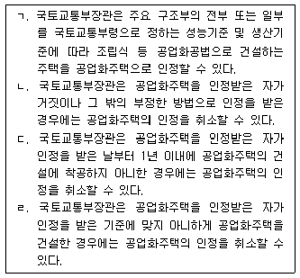
- ㄱ, ㄴ
- ㄴ, ㄷ
- ㄱ, ㄴ, ㄷ
- ㄱ, ㄷ, ㄹ
- ㄱ, ㄴ, ㄷ, ㄹ
(정답률: 알수없음)
7. 주택법령상 복리시설로 옳은 것을 모두 고른 것은?
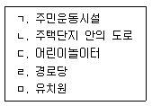
- ㄱ, ㄴ
- ㄱ, ㄹ
- ㄴ, ㄷ, ㅁ
- ㄱ, ㄷ, ㄹ, ㅁ
- ㄴ, ㄷ, ㄹ, ㅁ
(정답률: 알수없음)
8. 주택법령상 공동주택관리규약에 관한 설명으로 옳지 않은 것은?
- 시장ㆍ군수ㆍ구청장은 공동주택의 관리 또는 사용에 관하여 준거가 되는 공동주택관리규약의 준칙을 정하여야 한다.
- 입주자와 사용자는 공동주택관리규약의 준칙을 참조하여 공동주택관리규약을 정한다.
- 공동주택관리규약은 입주자의 지위를 승계한 자에 대하여도 그 효력이 있다.
- 분양을 목적으로 건설한 공동주택과 임대주택이 함께 있는 주택단지의 경우 입주자와 사용자, 임대사업자는 해당 주택단지에 공통적으로 적용할 수 있는 공동주택관리규약을 정할 수 있다.
- 공동주택의 관리주체는 공동주택관리규약을 보관하여 입주자등이 열람을 청구하거나 자기의 비용으로 복사를 요구하는 때에는 이에 응하여야 한다.
(정답률: 알수없음)
9. 주택법령상 세대구분형 공동주택의 건설기준, 면적기준 및 건설 등에 관한 설명으로 옳지 않은 것은?
- 세대구분형 공동주택의 세대별로 구분된 각각의 공간마다 별도의 욕실, 부엌과 현관을 설치할 것
- 세대구분형 공동주택은 주택단지 공동주택 전체 호수의 3분의 1을 넘지 아니할 것
- 하나의 세대가 통합하여 사용할 수 있도록 세대 간에 연결문 또는 경량구조의 경계벽 등을 설치할 것
- 세대구분형 공동주택의 세대별로 구분된 각각의 공간은 주거전용면적이 10제곱미터 이상일 것
- 세대구분형 공동주택의 건설과 관련하여 주택법 제21조에 따른 주택건설기준 등을 적용하는 경우 세대구분형 공동주택의 세대수는 그 구분된 공간의 세대에 관계없이 하나의 세대로 산정한다.
(정답률: 알수없음)
10. 임대주택법령의 내용으로 옳지 않은 것은?
- 임대사업자는 특별수선충당금을 사용검사일부터 1월이 지난 날이 속하는 달부터 매달 적립한다.
- 임대사업자는 수선유지비를 관리비로 징수할 수 있다.
- 임대주택은 임대의무기간이 지나지 아니하면 매각할 수 없다.
- 임차인 또는 임차인대표회의는 시장ㆍ군수ㆍ구청장에게 공인회계사등의 선정을 의뢰할 수 있다.
- 지방자치단체의 장은 임대주택을 보다 효율적으로 관리하기 위하여 정보체계를 연계하거나 활용할 수 있다.
(정답률: 알수없음)
11. 임대주택법령상 임대차계약을 해제 또는 해지하거나 갱신거절을 할 수 없는 경우는?
- 임대사업자가 시장ㆍ군수 또는 구청장이 지정한 기간에 하자보수명령을 이행하지 아니한 경우
- 임대사업자가 임대차계약 체결 후 또는 보증기간 만료 후 1개월 이내에 임대보증금에 관한 보증에 가입하지 않는 경우
- 임차인이 임대료를 2개월 연체한 경우
- 임대사업자가 임차인의 의사에 반하여 임대주택의 부대ㆍ복리시설을 파손하거나 철거시킨 경우
- 임대사업자의 귀책사유로 입주기간 종료일부터 3개월 이내에 입주할 수 없는 경우
(정답률: 알수없음)
12. 건축법령상 다중이용 건축물이 아닌 것은?
- 바닥면적의 합계가 5천제곱미터인 숙박시설 중 관광숙박시설
- 바닥면적의 합계가 6천제곱미터인 종교시설
- 바닥면적의 합계가 7천제곱미터인 판매시설
- 바닥면적의 합계가 8천제곱미터인 동물원
- 층수가 18층인 건축물
(정답률: 알수없음)
13. 건축법령상 다중이용 건축물의 유지관리를 위한 정기점검에 관한 내용이다. ( )안에 들어갈 숫자를 순서대로 옳게 나열한 것은?
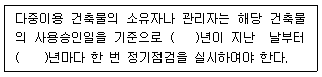
- 5, 1
- 7, 1
- 10, 2
- 15, 3
- 20, 5
(정답률: 알수없음)
14. 건축법령상 사용승인을 받은 건축물의 용도를 변경하려는 경우에 특별자치시장ㆍ특별자치도지사 또는 시장ㆍ군수ㆍ구청장의 허가를 받아야 하는 경우는?
- 운동시설을 업무시설로 용도 변경하는 경우
- 공동주택을 제1종 근린생활시설로 용도 변경하는 경우
- 문화 및 집회시설을 판매시설로 용도 변경하는 경우
- 종교시설을 수련시설로 용도 변경하는 경우
- 교육연구시설을 교정 및 군사시설로 용도 변경하는 경우
(정답률: 알수없음)
15. 건축법령상 용어의 정의로서 옳지 않은 것은?
- "고층건축물"이란 층수가 30층 이상이거나 높이가 120미터 이상인 건축물을 말한다.
- "건축"이란 건축물을 신축ㆍ증축ㆍ개축ㆍ재축(再築)하거나 건축물을 이전하는 것을 말한다.
- "부속건축물"이란 건축물의 내부와 외부를 연결하는 완충공간으로서 전망이나 휴식 등의 목적으로 건축물 외벽에 접하여 부가적으로 설치되는 공간을 말한다.
- "지하층"이란 건축물의 바닥이 지표면 아래에 있는 층으로서 바닥에서 지표면까지 평균높이가 해당 층 높이의 2분의 1 이상인 것을 말한다.
- "재축"이란 건축물이 천재지변이나 그 밖의 재해(災害)로 멸실된 경우 그 대지에 종전과 같은 규모의 범위에서 다시 축조하는 것을 말한다.
(정답률: 알수없음)
16. 건축법령상 건축면적의 산정대상인 것은?
- 건축물 지상층에 일반인이나 차량이 통행할 수 있도록 설치한 보행통로나 차량통로
- 지하주차장의 경사로
- 건축물 지하층의 출입구 상부(출입구 너비에 상당하는 규모의 부분)
- 생활폐기물 보관함(음식물쓰레기, 의류 등의 수거함)
- 태양열을 주된 에너지원으로 이용하는 주택
(정답률: 알수없음)
17. 도시 및 주거환경정비법령상 정비예정구역 또는 정비구역의 해제 사유가 아닌 것은?
- 주택재개발사업ㆍ주택재건축사업으로서 조합 설립인가를 받은 날부터 2년이 되는 날까지 사업시행인가를 신청하지 아니하는 경우
- 주택재개발사업으로서 토지등소유자가 정비구역으로 지정ㆍ고시된 날부터 2년이 되는 날까지 조합설립추진위원회의 승인을 신청하지 아니하는 경우
- 주택재건축사업으로서 조합설립추진위원회가 추진위원회 승인일부터 2년이 되는 날까지 조합 설립인가를 신청하지 아니하는 경우
- 주택재개발사업ㆍ주택재건축사업으로서 조합설립추진위원회의 승인 또는 조합 설립인가가 취소되는 경우
- 정비예정구역에 대하여 기본계획에서 정한 정비구역 지정 예정일부터 3년이 되는 날까지 특별자치시장, 특별자치도지사 및 대도시의 시장이 정비구역을 지정하지 아니하거나 시장, 군수 또는 구청장이 정비구역 지정을 신청하지 아니하는 경우
(정답률: 알수없음)
18. 도시재정비 촉진을 위한 특별법령의 내용으로 옳지 않은 것은?
- 특별시장ㆍ광역시장 또는 도지사는 재정비촉진지구의 지정을 신청받은 경우에는 관계 행정기관의 장과 협의를 거쳐 지방도시계획위원회의 심의를 거쳐 재정비촉진지구를 지정한다.
- 총괄사업관리자는 지방자치단체의 장을 대행하여 도로 등 기반시설의 설치 업무를 수행한다.
- 재정비촉진계획에 따라 설치되는 기반시설의 설치비용은 도시재정비 촉진을 위한 특별법에 특별한 규정이 있는 경우를 제외하고는 사업시행자가 부담하는 것을 원칙으로 한다.
- 재정비촉진계획 수립권자는 사업협의회 위원의 3분의 1이 요청하는 경우 사업협의회를 개최하여야 한다.
- 국토교통부장관은 총괄계획가의 업무 수행에 관하여 필요한 사항을 정할 수 있다.
(정답률: 알수없음)
19. 소방기본법령의 내용으로 옳지 않은 것은?
- 소방대는 화재, 재난ㆍ재해, 그 밖의 위급한 상황이 발생한 현장에 신속하게 출동하기 위하여 긴급한 경우라도 일반적인 통행에 쓰이지 아니하는 도로 위로 통행할 수 없다.
- "관계인"이란 소방대상물의 소유자ㆍ관리자 또는 점유자를 말한다.
- 소방본부장은 소방활동을 할 때 긴급한 경우에는 이웃한 소방본부장 또는 소방서장에게 소방업무의 응원을 요청할 수 있다.
- 금고 이상의 형의 집행유예를 선고받고 그 유예기간 중에 있는 사람은 소방안전교육사가 될 수 없다.
- 소방공무원과 국가경찰공무원은 화재조사를 할 때에 서로 협력하여야 한다.
(정답률: 알수없음)
20. 소방시설 설치ㆍ유지 및 안전관리에 관한 법령상 소방용품의 품질관리에 관한 내용으로 옳지 않은 것은?
- 대통령령으로 정하는 소방용품을 제조하거나 수입하려는 자는 국민안전처장관의 형식승인을 받아야 한다. 다만, 연구개발 목적으로 제조하거나 수입하는 소방용품은 그러하지 아니하다.
- 소방용품의 형상ㆍ구조ㆍ재질ㆍ성분ㆍ성능 등의 형식승인 및 제품검사의 기술기준 등에 관한 사항은 국민안전처장관이 정하여 고시한다.
- 국민안전처장관은 제조자 또는 수입자 등의 요청이 있는 경우 소방용품에 대하여 성능인증을 할 수 있다.
- 우수품질인증의 유효기간은 10년의 범위에서 총리령으로 정한다.
- 국민안전처장관은 소방용품의 품질관리를 위하여 필요하다고 인정할 때에는 유통 중인 소방용품을 수집하여 검사할 수 있다.
(정답률: 알수없음)
21. 승강기시설 안전관리법령의 내용으로 옳지 않은 것은?
- 국민안전처장관은 승강기안전종합정보망을 구축ㆍ운영할 수 있다.
- 승강기의 제조 또는 수입을 업으로 하려는 자는 국민안전처장관에게 등록하여야 한다.
- 승강기의 설치를 업으로 하는 자는 승강기를 설치하였을 경우에 총리령으로 정하는 바에 따라 국민안전처장관에게 그 사실을 신고하여야 한다.
- 승강기 유지관리를 업으로 하려는 자는 유지관리 대상 승강기의 종류에 따라 필요한 등록기준을 갖추어 총리령에 따라 시ㆍ도지사에게 등록하여야 한다.
- 국민안전처장관은 승강기 관리주체가 정밀안전검사를 받은 경우 해당 연도의 정기검사 또는 수시검사를 면제할 수 있다.
(정답률: 알수없음)
22. 전기사업법령의 내용으로 옳지 않은 것은?
- 전기사업을 하려는 자는 전기사업의 종류별로 산업통상자원부장관의 허가를 받아야 한다.
- 한국전력거래소는 주된 사무소의 소재지에서 설립등기를 함으로써 성립한다.
- "발전사업"이란 전기를 생산하여 이를 전력시장을 통하여 전기판매사업자에게 공급하는 것을 주된 목적으로 하는 사업을 말한다.
- 발전사업자 및 전기판매사업자는 정당한 사유 없이 전기의 공급을 거부하여서는 아니 된다.
- 산업통상자원부장관은 5년 단위로 전력산업기반조성계획을 수립ㆍ시행하여야 한다.
(정답률: 알수없음)
23. 시설물의 안전관리에 관한 특별법령의 내용으로 옳지 않은 것은?
- 국토교통부장관은 시설물의 안전과 유지관리에 관한 기본계획을 10년마다 수립ㆍ시행하고 이를 관보에 고시하여야 한다.
- 민간관리주체는 기본계획에 따라 소관 시설물에 대한 안전 및 유지관리계획을 특별자치도지사ㆍ시장ㆍ군수 또는 자치구의 구청장에게 제출하여야 한다.
- 안전점검의 실시시기, 안전점검을 실시할 수 있는 자의 자격과 안전점검 대가(代價) 등에 필요한 사항은 대통령령으로 정한다.
- 시설물의 안전점검은 정기점검ㆍ정밀점검 및 긴급점검으로 구분하여 실시한다.
- 국토교통부장관은 기본계획을 수립할 때 미리 관계 중앙행정기관의 장과 협의하여야 한다.
(정답률: 알수없음)
24. 집합건물의 소유 및 관리에 관한 법령상 규약 및 집회에 관한 설명으로 옳지 않은 것은?
- 규약의 설정ㆍ변경 및 폐지는 관리단집회에서 구분소유자 4분의 3 이상 및 의결권의 4분의 3 이상의 찬성을 얻어야 한다.
- 규약은 관리인 또는 구분소유자나 그 대리인으로서 건물을 사용하고 있는 자 중 1인이 보관하여야 한다.
- 관리인은 매년 회계연도 종료 후 5개월 이내에 정기 관리단집회를 소집하여야 한다.
- 구분소유자의 5분의 1 이상이 회의의 목적 사항을 구체적으로 밝혀 관리단집회의 소집을 청구하면 관리인은 관리단집회를 소집하여야 한다. 이 정수(定數)는 규약으로 감경할 수 있다.
- 관리단집회의 의사는 이 법 또는 규약에 특별한 규정이 없으면 구분소유자의 과반수 및 의결권의 과반수로써 의결한다.
(정답률: 알수없음)
25. 공동주거관리에 관한 설명으로 옳지 않은 것은?
- 공동주거관리는 주택의 수명을 연장시켜 오랫동안 이용하고 거주할 수 있게 함으로써 자원낭비를 방지하고 환경을 보호하기 위해 필요하다.
- 공동주거관리자는 주거문화향상을 위하여 주민, 관리회사, 지방자치단체와 상호 협력체제가 원만하게 이루어지도록 하는 휴먼웨어의 네트워크 관리가 필요하다.
- 공동주거관리자는 민간 또는 동대표간 분쟁이 발생하였을 때 무엇보다도 법적분쟁절차에 의해 해결하는 것을 최우선으로 하여야 한다.
- 공동주거관리는 주민들의 삶에 대한 사고전환을 기반으로 관리주체, 민간기업, 지방자치단체, 정부와의 네트워크를 체계적으로 활용하는 관리이다.
- 공동주거관리는 공동주택을 거주자들의 다양한 생활변화와 요구에 대응하는 공간으로 개선하고, 주민의 삶의 질을 향상시키는 적극적인 관리를 포함한다.
(정답률: 알수없음)
2과목: 공동주택관리실무
26. 주택법령상 공동주택 관리사무소장에 관한 설명으로 옳지 않은 것은?
- 500세대 미만의 공동주택에는 주택관리사를 갈음하여 주택관리사보를 해당 공동주택의 관리사무소장으로 배치할 수 있다.
- 관리사무소장은 공동주택의 운영ㆍ관리ㆍ유지ㆍ보수ㆍ교체ㆍ개량 및 리모델링에 관한 업무와 관련하여 입주자대표회의를 대리하여 재판상 또는 재판 외의 행위를 할 수 없다.
- 주택관리사등은 관리사무소장의 업무를 집행하면서 고의 또는 과실로 입주자에게 재산상의 손해를 입힌 경우에는 그 손해를 배상할 책임이 있다.
- 관리사무소장은 선량한 관리자의 주의로 그 직무를 수행하여야 한다.
- 손해배상 책임을 보장하기 위하여 공탁한 공탁금은 주택관리사등이 해당 공동주택의 관리사무소장의 직책을 사임하거나 그 직에서 해임된 날 또는 사망한 날부터 3년 이내에는 회수할 수 없다.
(정답률: 알수없음)
27. 주택법령상 주택관리업자에 대한 입주자등의 만족도 평가에 관한 설명으로 옳지 않은 것은?
- 500세대인 공동주택은 주택관리업자에 대한 입주자등의 만족도 평가의 대상이다.
- 300세대인 승강기가 설치된 공동주택은 주택관리업자에 대한 입주자등의 만족도 평가의 대상이다.
- 200세대인 중앙집중식 난방방식의 공동주택은 주택관리업자에 대한 입주자등의 만족도 평가의 대상이다.
- 입주자등의 만족도 평가는 국토교통부장관이 지정하는 인터넷 홈페이지를 통하여 실시한다.
- 해당 주택단지에서 50세대 이상이 만족도 평가에 참여한 경우 또는 전체 입주자등의 10분의 1 이상이 만족도 평가에 참여한 경우 해당 공동주택단지의 인터넷 홈페이지에 그 결과를 공개하여야 한다.
(정답률: 알수없음)
28. 주택법령상 관리주체의 업무에 속하지 않는 것은?
- 관리비 및 사용료의 징수와 공과금 등의 납부대행
- 관리규약으로 정한 사항의 집행
- 관리비등의 집행을 위한 사업계획 및 예산의 승인
- 공동주택단지 안에서 발생한 안전사고 및 도난사고 등에 대한 대응조치
- 입주자등의 공동사용에 제공되고 있는 공동주택단지 안의 토지ㆍ부대시설 및 복리시설에 대한 무단 점유행위의 방지 및 위반행위시의 조치
(정답률: 알수없음)
29. 주택법령상 동별 대표자 등의 선거관리에 관한 설명으로 옳은 것은?
- 동별 대표자 및 선거관리위원회 위원 임기 중에 사퇴한 사람으로서 사퇴할 당시의 임기가 끝나지 아니한 사람은 선거관리위원회 위원이 될 수 있다.
- 300세대인 공동주택은 「선거관리위원회법」에 따른 선거관리위원회 소속 직원 1명을 위원으로 위촉하여야 한다.
- 선거관리위원회의 구성ㆍ운영ㆍ업무ㆍ경비, 위원의 선임ㆍ해임 및 임기 등에 관한 사항은 국토교통부령으로 정한다.
- 500세대 이상인 공동주택의 선거관리위원회는 그 구성원 과반수의 찬성으로 그 의사를 결정한다.
- 동별 대표자 또는 그 후보자는 선거관리위원회 위원이 될 수 없으나, 그 배우자나 직계존비속은 선거관리위원회 위원이 될 수 있다.
(정답률: 알수없음)
30. 주택법령상 담보책임 및 하자보수 등에 관한 설명으로 옳지 않은 것은?
- 사업주체에 대한 하자보수청구는 입주자 단독으로는 할 수 없으며 입주자대표회의를 통하여야 한다.
- 하자보수에 대한 담보책임을 지는 사업주체에는 「건축법」에 따라 건축허가를 받아 분양을 목적으로 하는 공동주택을 건축한 건축주도 포함된다.
- 한국토지주택공사가 사업주체인 경우에는 주택법령에 따른 하자보수보증금을 예치하지 않아도 된다.
- 사업주체는 담보책임기간에 공동주택의 내력구조부에 중대한 하자가 발생한 경우에는 하자 발생으로 인한 손해를 배상할 책임이 있다.
- 시장ㆍ군수ㆍ구청장은 담보책임기간에 공동주택의 구조안전에 중대한 하자가 있다고 인정하는 경우에는 안전진단기관에 의뢰하여 안전진단을 할 수 있다.
(정답률: 알수없음)
31. 임대주택법령상 임대주택의 관리에 관한 설명으로 옳은 것은?
- 임대사업자가 임대의무기간이 지난 후 건설임대주택을 분양전환하려면 적립한 특별수선충당금을 「주택법」에 따라 최초로 구성되는 입주자대표회의에 넘겨주어야 한다.
- 임차인대표회의는 필수적으로 회장 1명, 부회장 1명, 이사 1명 및 감사 1명을 동별 대표자 중에서 선출하여야 한다.
- 임대사업자가 임대주택을 자체관리하려면 대통령령으로 정하는 기술인력 및 장비를 갖추고 국토교통부장관에게 신고해야 한다.
- 임차인대표회의를 소집하려는 경우에는 소집일 3일 전까지 회의의 목적ㆍ일시 및 장소 등을 임차인에게 알리거나 공시하여야 한다.
- 임대사업자는 임차인으로부터 임대주택을 관리하는 데에 필요한 경비를 받을 수 없다.
(정답률: 알수없음)
32. 공동주택관리와 관련하여 문서의 보존(보관)기간 기준으로 옳게 연결된 것은?
- 주택법령상 의무관리대상 공동주택 관리주체의 관리비등의 징수ㆍ보관ㆍ예치ㆍ집행 등 모든 거래 행위에 관한 장부 및 그 증빙서류 - 해당 회계연도 종료일부터 3년
- 소방시설 설치ㆍ유지 및 안전관리에 관한 법령상 소방시설등 작동기능점검 결과 - 1년
- 근로기준법령상 근로자 명부 - 해고되거나 퇴직 또는 사망한 날부터 2년
- 승강기시설 안전관리법령상 승강기 자체점검기록 - 6개월
- 어린이놀이시설 안전관리법령상 어린이놀이시설의 안전점검실시대장 - 최종 기재일부터 3년
(정답률: 알수없음)
33. 주택법령상 장기수선계획 수립기준에 따른 공사종별 수선주기로 옳지 않은 것은?
- 보안ㆍ방범시설 중 CCTV 카메라 및 침입탐지 시설의 전면교체 수선주기 - 5년
- 옥내배전설비 중 스위치의 전면교체 수선주기 - 6년
- 건물 내부 천장의 수성도료칠 전면도장 수선주기 - 10년
- 피뢰설비의 전면교체 수선주기 - 25년
- 승강기 및 인양기 설비 중 도어개폐장치의 전면교체 수선주기 - 15년
(정답률: 알수없음)
34. 노동조합 및 노동관계조정법령상 단체협약에 관한 내용으로 옳지 않은 것은?
- 행정관청은 단체협약중 위법한 내용이 있는 경우에는 노동위원회의 의결을 얻어 그 시정을 명할 수 있다.
- 단체협약의 당사자는 단체협약의 체결일부터 30일 이내에 이를 행정관청에게 신고하여야 한다.
- 단체협약에는 2년을 초과하는 유효기간을 정할 수 없다.
- 단체협약에 정한 근로조건 기타 근로자의 대우에 관한 기준에 위반하는 근로계약의 부분은 무효로 한다.
- 하나의 사업 또는 사업장에 상시 사용되는 동종의 근로자 반수 이상이 하나의 단체협약의 적용을 받게 된 때에는 당해 사업 또는 사업장에 사용되는 다른 동종의 근로자에 대하여도 당해 단체협약이 적용된다.
(정답률: 알수없음)
35. 다음과 같은 조건의 A시 소재 甲아파트에 근무하는 관리사무소장이 행한 업무처리로 옳지 않은 것은?
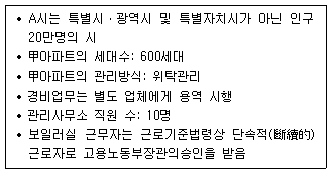
- 경비업체에서 채용한 65세인 경비원에 대하여 「경비업법」상 채용이 불가능한 고령자라며 젊은 사람으로 교체를 요구하였다.
- 「동물보호법」상 등록대상동물의 승강기 내 배설물을 소유자등이 즉시 수거하지 않을 경우 50만원 이하의 과태료가 부과될 수 있다고 게시판에 공고하였다.
- 지하주차장에 장기간 무단으로 방치된 차량을 「자동차관리법」에 의거 A시 시장에게 견인을 요청하였다.
- 오후 10시부터 오전 6시까지 야간근로한 보일러실 근무 직원에 대해 「근로기준법」에 의거 통상임금의 100분의 50을 가산하여 임금을 산정하였다.
- 「주택관리업자 및 사업자 선정지침」에 의거 재활용품 판매를 위해 매각업체를 경쟁입찰로 선정하였다.
(정답률: 알수없음)
36. 주택법령상 입주자대표회의의 구성에 관한 설명으로 옳지 않은 것은?
- 입주자대표회의는 4명 이상으로 구성하되, 동별 세대수에 비례하여 공동주택관리규약으로 정한 선거구에 따라 선출된 대표자로 구성한다.
- 동별 대표자 입후보자가 1명인 경우 입주자등의 과반수가 투표하고 투표자의 과반수 찬성으로 선출한다.
- 해당 공동주택 관리주체의 소속 임직원과 관리주체에 용역을 공급하거나 사업자로 지정된 자의 소속 임원은 동별 대표자가 될 수 없다.
- 선출공고일 현재 당해 공동주택단지 안에서 주민등록을 마친 후 계속하여 6개월 이상 거주하고 있는 사용자는 동별 대표자가 될 수 있다.
- 공동주택 관리와 관련하여 벌금 100만원 이상의 형을 선고받은 후 5년이 지나지 아니한 사람은 동별 대표자가 될 수 없다.
(정답률: 알수없음)
37. 엘리베이터의 안전장치 중 엘리베이터 카(car)가 최상층이나 최하층에서 정상 운행 위치를 벗어나 그 이상으로 운행하는 것을 방지하기 위한 안전장치는?
- 완충기
- 추락방지판
- 리미트스위치
- 전자브레이크
- 조속기
(정답률: 알수없음)
38. 급수설비에 관한 설명으로 옳지 않은 것은?
- 펌프직송방식이 고가수조방식보다 위생적인 급수가 가능하다.
- 급수관경을 정할 때 관균등표 또는 유량선도가 일반적으로 이용된다.
- 고층건물일 경우 급수압 조절 및 소음방지 등을 위해 적절한 급수 조닝(zoning)이 필요하다.
- 급수설비의 오염원인으로 상수와 상수 이외의 물질이 혼합되는 캐비테이션(cavitation)현상이 있다.
- 급수설비 공사 후 탱크류의 누수 유무를 확인하기 위해 만수시험을 한다.
(정답률: 알수없음)
39. 건물의 단열에 관한 설명으로 옳지 않은 것은?
- 열전도율이 낮을수록 우수한 단열재이다.
- 부실한 단열은 결로현상이 유발될 수 있다.
- 알루미늄박(foil)은 저항형 단열재이다.
- 내단열은 외단열에 비해 열교현상의 가능성이 크다.
- 단열원리상 벽체에는 저항형이 반사형보다 유리하다.
(정답률: 알수없음)
40. 배수트랩에 관한 설명으로 옳지 않은 것은?
- 배수트랩의 역할 중 하나는 배수관 내에서 발생한 악취가 실내로 침입하는 것을 방지하는 것이다.
- 배수트랩은 봉수가 파괴되지 않는 형태로 한다.
- 배수트랩 봉수의 깊이는 50~100mm로 하는 것이 보통이다.
- 배수트랩 중 벨트랩은 화장실 등의 바닥배수에 적합한 트랩이다.
- 배수트랩은 배수수직관 가까이에 설치하여 원활한 배수가 이루어지도록 한다.
(정답률: 알수없음)
41. 국가화재안전기준(NFSC)상 무선통신보조설비의 증폭기 설치기준에 관한 내용이다. ( )안에 들어갈 작동시간으로 옳은 것은?
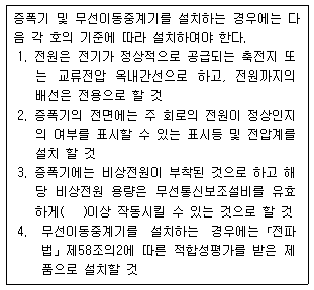
- 5분
- 10분
- 15분
- 20분
- 30분
(정답률: 알수없음)
42. 수배관방식의 하나인 역환수(reverse return)방식의 목적과 유사한 기능을 갖는 것은?
- 스트레이너
- 정유량밸브
- 체크밸브
- 볼조인트
- 열동트랩
(정답률: 알수없음)
43. 다음 조건의 600인이 거주하는 공동주택에 순간최대 예상급수량[ℓ/min]은?
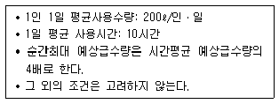
- 400
- 800
- 1,000
- 1,400
- 2,000
(정답률: 알수없음)
44. 단물이라고도 불리는 연수(軟水)에 관한 설명으로 옳지 않은 것은?
- 총경도 120ppm이상의 물이다.
- 경수보다 표백용으로 적합하다.
- 경수보다 비누가 잘 풀린다.
- 경수보다 염색용으로 적합하다.
- 경수보다 보일러 용수로 적합하다.
(정답률: 알수없음)
45. 다음 자동화재탐지설비의 감지기에서 열감지기만을 모두 고른 것은?
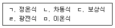
- ㄱ, ㄴ, ㄷ
- ㄱ, ㄷ, ㄹ
- ㄱ, ㄹ, ㅁ
- ㄴ, ㄷ, ㄹ
- ㄷ, ㄹ, ㅁ
(정답률: 알수없음)
46. 배수계통에 사용되는 트랩으로 옳지 않은 것은?
- P트랩
- 벨트랩
- 기구트랩
- 버킷트랩
- 드럼트랩
(정답률: 알수없음)
47. 다음은 배관설비의 각종 이음부속의 용도를 분류한 것이다. 옳게 짝지어지지 않은 것은?
- 분기배관: 티, 크로스
- 동일 지름 직선 연결: 소켓, 니플
- 관단 막음: 플러그, 캡
- 방향 전환: 유니온, 이경소켓
- 이경관의 연결: 부싱, 이경니플
(정답률: 알수없음)
48. 배관재료의 종류별 특성에 관한 설명으로 옳지 않은 것은?
- 스테인리스강관은 부식에 강하여 급수, 급탕과 같은 위생설비 배관용 등으로 널리 사용된다.
- 주철관은 내식, 내마모성이 우수하여 급수, 오ㆍ배수배관용 등으로 사용된다.
- 동관은 열전도성이 높고 유연성이 우수하다.
- 탄소강관은 주철관에 비하여 가볍고 인장강도가 커서 고압용으로 사용된다.
- 라이닝관은 경량이면서 산, 알칼리에 대한 내식성이 낮고 마찰이 커 특수용 배관으로 사용된다.
(정답률: 알수없음)
3과목: 주택관리관계법규(주관식)
49. 주택법시행령 제72조의2(손해배상책임의 보장)에 관한 규정의 일부이다. ( )안에 들어갈 숫자를 쓰시오.
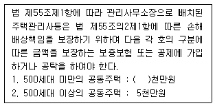
- 정답 : 3
- 본 문제는 주관식입니다. 1번을 누르면 정답 처리 됩니다.
- 본 문제는 주관식입니다. 1번을 누르면 정답 처리 됩니다.
- 본 문제는 주관식입니다. 1번을 누르면 정답 처리 됩니다.
- 본 문제는 주관식입니다. 1번을 누르면 정답 처리 됩니다.
(정답률: 알수없음)
50. 주택법시행령 제3조(도시형 생활주택)의 규정의 일부이다. ( )안에 들어갈 용어를 쓰시오.
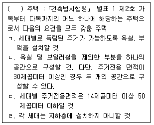
- 정답 : 원룸형
- 본 문제는 주관식입니다. 1번을 누르면 정답 처리 됩니다.
- 본 문제는 주관식입니다. 1번을 누르면 정답 처리 됩니다.
- 본 문제는 주관식입니다. 1번을 누르면 정답 처리 됩니다.
- 본 문제는 주관식입니다. 1번을 누르면 정답 처리 됩니다.
(정답률: 알수없음)
51. 주택법시행령 제55조의2의 규정의 일부이다. ( )안에 들어갈 숫자를 쓰시오.
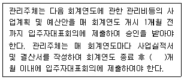
- 정답 : 2
- 본 문제는 주관식입니다. 1번을 누르면 정답 처리 됩니다.
- 본 문제는 주관식입니다. 1번을 누르면 정답 처리 됩니다.
- 본 문제는 주관식입니다. 1번을 누르면 정답 처리 됩니다.
- 본 문제는 주관식입니다. 1번을 누르면 정답 처리 됩니다.
(정답률: 알수없음)
52. 주택법 제19조(토지에의 출입 등에 따른 손실보상)의 규정의 일부이다. ( )안에 들어갈 용어를 쓰시오.
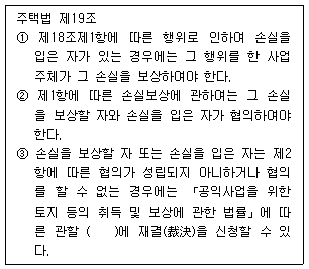
- 정답 : 토지수용위원회
- 본 문제는 주관식입니다. 1번을 누르면 정답 처리 됩니다.
- 본 문제는 주관식입니다. 1번을 누르면 정답 처리 됩니다.
- 본 문제는 주관식입니다. 1번을 누르면 정답 처리 됩니다.
- 본 문제는 주관식입니다. 1번을 누르면 정답 처리 됩니다.
(정답률: 알수없음)
53. 주택법 제41조(투기과열지구의 지정 및 해제)의 규정의 일부이다. ( )안에 들어갈 용어를 쓰시오.
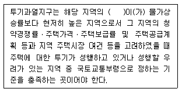
- 정답 : 주택가격상승률
- 본 문제는 주관식입니다. 1번을 누르면 정답 처리 됩니다.
- 본 문제는 주관식입니다. 1번을 누르면 정답 처리 됩니다.
- 본 문제는 주관식입니다. 1번을 누르면 정답 처리 됩니다.
- 본 문제는 주관식입니다. 1번을 누르면 정답 처리 됩니다.
(정답률: 알수없음)
54. 임대주택법 제19조의 규정이다. ( )안에 들어갈 공통된 용어를 쓰시오.
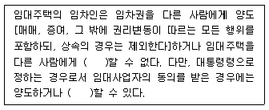
- 정답 : 전대
- 본 문제는 주관식입니다. 1번을 누르면 정답 처리 됩니다.
- 본 문제는 주관식입니다. 1번을 누르면 정답 처리 됩니다.
- 본 문제는 주관식입니다. 1번을 누르면 정답 처리 됩니다.
- 본 문제는 주관식입니다. 1번을 누르면 정답 처리 됩니다.
(정답률: 알수없음)
55. 임대주택법 제21조(건설임대주택의 우선 분양전환) 제7항의 규정이다. ( )안에 들어갈 숫자를 쓰시오.
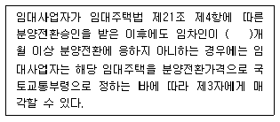
- 정답 : 6
- 본 문제는 주관식입니다. 1번을 누르면 정답 처리 됩니다.
- 본 문제는 주관식입니다. 1번을 누르면 정답 처리 됩니다.
- 본 문제는 주관식입니다. 1번을 누르면 정답 처리 됩니다.
- 본 문제는 주관식입니다. 1번을 누르면 정답 처리 됩니다.
(정답률: 알수없음)
56. 건축법령상 특별건축구역에서 건축기준 등의 특례사항을 적용하여 건축할 수 있는 건축물에 관한 내용이다. ( )안에 들어갈 숫자를 쓰시오.
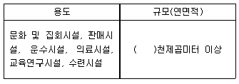
- 정답 : 2
- 본 문제는 주관식입니다. 1번을 누르면 정답 처리 됩니다.
- 본 문제는 주관식입니다. 1번을 누르면 정답 처리 됩니다.
- 본 문제는 주관식입니다. 1번을 누르면 정답 처리 됩니다.
- 본 문제는 주관식입니다. 1번을 누르면 정답 처리 됩니다.
(정답률: 알수없음)
57. 건축법 제42조(대지의 조경)의 규정의 일부이다. ( )안에 들어갈 숫자를 쓰시오.
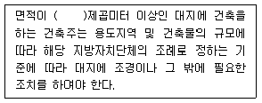
- 정답 : 200
- 본 문제는 주관식입니다. 1번을 누르면 정답 처리 됩니다.
- 본 문제는 주관식입니다. 1번을 누르면 정답 처리 됩니다.
- 본 문제는 주관식입니다. 1번을 누르면 정답 처리 됩니다.
- 본 문제는 주관식입니다. 1번을 누르면 정답 처리 됩니다.
(정답률: 알수없음)
58. 건축법 제80조의 규정의 일부이다. ( )안에 들어갈 용어를 쓰시오.
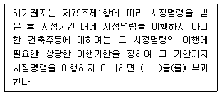
- 정답 : 이행강제금
- 본 문제는 주관식입니다. 1번을 누르면 정답 처리 됩니다.
- 본 문제는 주관식입니다. 1번을 누르면 정답 처리 됩니다.
- 본 문제는 주관식입니다. 1번을 누르면 정답 처리 됩니다.
- 본 문제는 주관식입니다. 1번을 누르면 정답 처리 됩니다.
(정답률: 알수없음)
59. 도시 및 주거환경정비법령상 용어의 정의이다. ( )안에 들어갈 용어를 쓰시오.
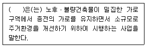
- 정답 : 가로주택정비사업
- 본 문제는 주관식입니다. 1번을 누르면 정답 처리 됩니다.
- 본 문제는 주관식입니다. 1번을 누르면 정답 처리 됩니다.
- 본 문제는 주관식입니다. 1번을 누르면 정답 처리 됩니다.
- 본 문제는 주관식입니다. 1번을 누르면 정답 처리 됩니다.
(정답률: 알수없음)
60. 소방기본법 제13조의 규정의 일부이다. ( )안에 들어갈 용어를 쓰시오.
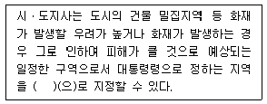
- 정답 : 화재경계지구
- 본 문제는 주관식입니다. 1번을 누르면 정답 처리 됩니다.
- 본 문제는 주관식입니다. 1번을 누르면 정답 처리 됩니다.
- 본 문제는 주관식입니다. 1번을 누르면 정답 처리 됩니다.
- 본 문제는 주관식입니다. 1번을 누르면 정답 처리 됩니다.
(정답률: 알수없음)
61. 소방시설 설치ㆍ유지 및 안전관리에 관한 법률 제20조의 규정의 일부이다. ( )안에 들어갈 숫자를 쓰시오.
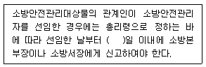
- 정답 : 14
- 본 문제는 주관식입니다. 1번을 누르면 정답 처리 됩니다.
- 본 문제는 주관식입니다. 1번을 누르면 정답 처리 됩니다.
- 본 문제는 주관식입니다. 1번을 누르면 정답 처리 됩니다.
- 본 문제는 주관식입니다. 1번을 누르면 정답 처리 됩니다.
(정답률: 알수없음)
62. 승강기시설 안전관리법령상의 내용이다. ( )안에 들어갈 숫자를 쓰시오.
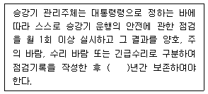
- 정답 : 2
- 본 문제는 주관식입니다. 1번을 누르면 정답 처리 됩니다.
- 본 문제는 주관식입니다. 1번을 누르면 정답 처리 됩니다.
- 본 문제는 주관식입니다. 1번을 누르면 정답 처리 됩니다.
- 본 문제는 주관식입니다. 1번을 누르면 정답 처리 됩니다.
(정답률: 알수없음)
63. 전기사업법령상 벌칙에 관한 규정이다. ( )안에 들어갈 숫자를 쓰시오.
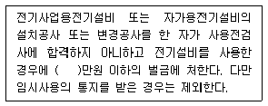
- 정답 : 300
- 본 문제는 주관식입니다. 1번을 누르면 정답 처리 됩니다.
- 본 문제는 주관식입니다. 1번을 누르면 정답 처리 됩니다.
- 본 문제는 주관식입니다. 1번을 누르면 정답 처리 됩니다.
- 본 문제는 주관식입니다. 1번을 누르면 정답 처리 됩니다.
(정답률: 알수없음)
64. 시설물의 안전관리에 관한 특별법령상의 내용이다. ( )안에 들어갈 용어를 쓰시오.
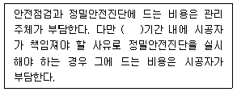
- 정답 : 하자담보책임
- 본 문제는 주관식입니다. 1번을 누르면 정답 처리 됩니다.
- 본 문제는 주관식입니다. 1번을 누르면 정답 처리 됩니다.
- 본 문제는 주관식입니다. 1번을 누르면 정답 처리 됩니다.
- 본 문제는 주관식입니다. 1번을 누르면 정답 처리 됩니다.
(정답률: 알수없음)
4과목: 공동주택관리실무(주관식)
65. 주택법령상 주택관리사 자격증의 교부 등에 관한 내용이다. ( )안에 들어갈 숫자를 순서대로 각각 쓰시오.
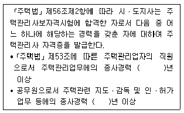
- 정답 : 5, 5
- 본 문제는 주관식입니다. 1번을 누르면 정답 처리 됩니다.
- 본 문제는 주관식입니다. 1번을 누르면 정답 처리 됩니다.
- 본 문제는 주관식입니다. 1번을 누르면 정답 처리 됩니다.
- 본 문제는 주관식입니다. 1번을 누르면 정답 처리 됩니다.
(정답률: 알수없음)
66. 근로기준법령상 부당해고등의 구제신청에 관한 내용이다. ( )안에 들어갈 숫자를 쓰시오.
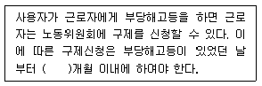
- 정답 : 3
- 본 문제는 주관식입니다. 1번을 누르면 정답 처리 됩니다.
- 본 문제는 주관식입니다. 1번을 누르면 정답 처리 됩니다.
- 본 문제는 주관식입니다. 1번을 누르면 정답 처리 됩니다.
- 본 문제는 주관식입니다. 1번을 누르면 정답 처리 됩니다.
(정답률: 알수없음)
67. 임대주택법령상 임대주택분쟁조정위원회와 관련된 내용이다. ( )안에 들어갈 숫자와 용어를 순서대로 각각 쓰시오.
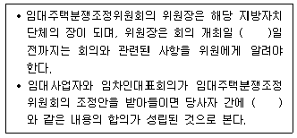
- 정답 : 2, 조정조서
- 본 문제는 주관식입니다. 1번을 누르면 정답 처리 됩니다.
- 본 문제는 주관식입니다. 1번을 누르면 정답 처리 됩니다.
- 본 문제는 주관식입니다. 1번을 누르면 정답 처리 됩니다.
- 본 문제는 주관식입니다. 1번을 누르면 정답 처리 됩니다.
(정답률: 알수없음)
68. 주택법령상 장기수선계획 수립에 관한 내용이다.
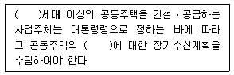
- 정답 : 300, 공용부분
- 본 문제는 주관식입니다. 1번을 누르면 정답 처리 됩니다.
- 본 문제는 주관식입니다. 1번을 누르면 정답 처리 됩니다.
- 본 문제는 주관식입니다. 1번을 누르면 정답 처리 됩니다.
- 본 문제는 주관식입니다. 1번을 누르면 정답 처리 됩니다.
(정답률: 알수없음)
69. 주택법령상 시설공사별 하자담보책임기간에 관한 내용이다. ( )안에 들어갈 숫자를 순서대로 각각 쓰시오.
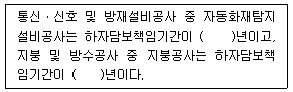
- 정답 : 3, 4
- 본 문제는 주관식입니다. 1번을 누르면 정답 처리 됩니다.
- 본 문제는 주관식입니다. 1번을 누르면 정답 처리 됩니다.
- 본 문제는 주관식입니다. 1번을 누르면 정답 처리 됩니다.
- 본 문제는 주관식입니다. 1번을 누르면 정답 처리 됩니다.
(정답률: 알수없음)
70. 주택법령상 관리주체의 회계감사에 관한 내용이다. ( )안에 들어갈 숫자를 순서대로 각각 쓰시오.
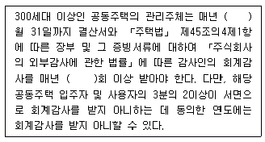
- 정답 : 10, 1
- 본 문제는 주관식입니다. 1번을 누르면 정답 처리 됩니다.
- 본 문제는 주관식입니다. 1번을 누르면 정답 처리 됩니다.
- 본 문제는 주관식입니다. 1번을 누르면 정답 처리 됩니다.
- 본 문제는 주관식입니다. 1번을 누르면 정답 처리 됩니다.
(정답률: 알수없음)
71. 근로기준법령상 용어의 정의이다. ( )안에 들어갈 숫자를 순서대로 각각 쓰시오.
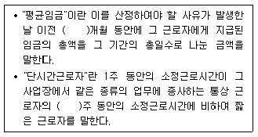
- 정답 : 3, 1
- 본 문제는 주관식입니다. 1번을 누르면 정답 처리 됩니다.
- 본 문제는 주관식입니다. 1번을 누르면 정답 처리 됩니다.
- 본 문제는 주관식입니다. 1번을 누르면 정답 처리 됩니다.
- 본 문제는 주관식입니다. 1번을 누르면 정답 처리 됩니다.
(정답률: 알수없음)
72. 다음에서 설명하고 있는 비용에 관한 주택법령상의 용어를 쓰시오.
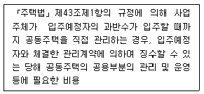
- 정답 : 관리비예치금
- 본 문제는 주관식입니다. 1번을 누르면 정답 처리 됩니다.
- 본 문제는 주관식입니다. 1번을 누르면 정답 처리 됩니다.
- 본 문제는 주관식입니다. 1번을 누르면 정답 처리 됩니다.
- 본 문제는 주관식입니다. 1번을 누르면 정답 처리 됩니다.
(정답률: 알수없음)
73. 소방시설 설치ㆍ유지 및 안전관리에 관한 법령상의 자동소화장치에 관한 내용이다. ( )안에 들어갈 용어를 쓰시오.
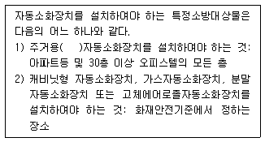
- 정답 : 주방
- 본 문제는 주관식입니다. 1번을 누르면 정답 처리 됩니다.
- 본 문제는 주관식입니다. 1번을 누르면 정답 처리 됩니다.
- 본 문제는 주관식입니다. 1번을 누르면 정답 처리 됩니다.
- 본 문제는 주관식입니다. 1번을 누르면 정답 처리 됩니다.
(정답률: 알수없음)
74. 고층아파트의 공기유동에 관한 설명이다. ( )안에 들어갈 용어를 쓰시오.
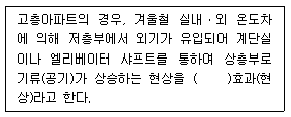
- 정답 : 연돌(굴뚝)
- 본 문제는 주관식입니다. 1번을 누르면 정답 처리 됩니다.
- 본 문제는 주관식입니다. 1번을 누르면 정답 처리 됩니다.
- 본 문제는 주관식입니다. 1번을 누르면 정답 처리 됩니다.
- 본 문제는 주관식입니다. 1번을 누르면 정답 처리 됩니다.
(정답률: 알수없음)
75. 국가화재안전기준(NFSC)상 옥내소화전설비의 배관에 관한 내용이다. ( )안에 들어갈 숫자를 쓰시오.
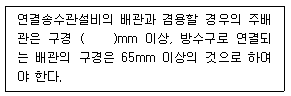
- 정답 : 100
- 본 문제는 주관식입니다. 1번을 누르면 정답 처리 됩니다.
- 본 문제는 주관식입니다. 1번을 누르면 정답 처리 됩니다.
- 본 문제는 주관식입니다. 1번을 누르면 정답 처리 됩니다.
- 본 문제는 주관식입니다. 1번을 누르면 정답 처리 됩니다.
(정답률: 알수없음)
76. 건축물의 설비기준 등에 관한 규칙상 차수설비 설치에 관한 내용이다. ( )안에 들어갈 연면적을 쓰시오.
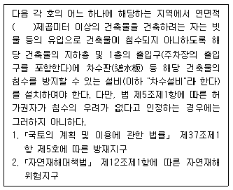
- 정답 : 1만(10,000)
- 본 문제는 주관식입니다. 1번을 누르면 정답 처리 됩니다.
- 본 문제는 주관식입니다. 1번을 누르면 정답 처리 됩니다.
- 본 문제는 주관식입니다. 1번을 누르면 정답 처리 됩니다.
- 본 문제는 주관식입니다. 1번을 누르면 정답 처리 됩니다.
(정답률: 알수없음)
77. 다음은 건축법령상 용어의 정의이다. ( )안에 들어갈 용어를 쓰시오.
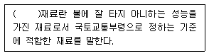
- 정답 : 난연
- 본 문제는 주관식입니다. 1번을 누르면 정답 처리 됩니다.
- 본 문제는 주관식입니다. 1번을 누르면 정답 처리 됩니다.
- 본 문제는 주관식입니다. 1번을 누르면 정답 처리 됩니다.
- 본 문제는 주관식입니다. 1번을 누르면 정답 처리 됩니다.
(정답률: 알수없음)
78. 주택건설기준 등에 관한 규정상 난간에 관한 내용이다. ( )안에 들어갈 숫자를 쓰시오.
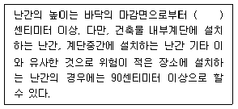
- 정답 : 120
- 본 문제는 주관식입니다. 1번을 누르면 정답 처리 됩니다.
- 본 문제는 주관식입니다. 1번을 누르면 정답 처리 됩니다.
- 본 문제는 주관식입니다. 1번을 누르면 정답 처리 됩니다.
- 본 문제는 주관식입니다. 1번을 누르면 정답 처리 됩니다.
(정답률: 알수없음)
79. 배수배관의 통기방식에 관한 설명이다. ( )안에 들어갈 용어를 쓰시오.
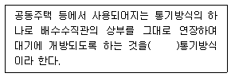
- 정답 : 신정
- 본 문제는 주관식입니다. 1번을 누르면 정답 처리 됩니다.
- 본 문제는 주관식입니다. 1번을 누르면 정답 처리 됩니다.
- 본 문제는 주관식입니다. 1번을 누르면 정답 처리 됩니다.
- 본 문제는 주관식입니다. 1번을 누르면 정답 처리 됩니다.
(정답률: 알수없음)
80. 압축식 냉동장치를 설명한 그림이다. ( )안에 들어갈 기기명칭을 쓰시오.
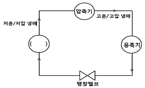
- 정답 : 증발기
- 본 문제는 주관식입니다. 1번을 누르면 정답 처리 됩니다.
- 본 문제는 주관식입니다. 1번을 누르면 정답 처리 됩니다.
- 본 문제는 주관식입니다. 1번을 누르면 정답 처리 됩니다.
- 본 문제는 주관식입니다. 1번을 누르면 정답 처리 됩니다.
(정답률: 알수없음)
리모델링 기본계획은 특별시장ㆍ광역시장 및 대도시의 시장이 수립하는 것이며, 대상지역은 관할구역이다. 리모델링 기본계획에는 도시과밀 방지 등을 위한 계획적 관리와 리모델링의 원활한 추진을 지원하기 위한 사항으로서 특별시ㆍ광역시 또는 도의 조례로 정하는 사항이 포함되어야 한다. 리모델링 기본계획의 작성기준 및 작성방법 등은 국토교통부장관이 정하며, 세대수 증가형 리모델링에 따른 도시과밀의 우려가 적은 경우 등 대통령령으로 정하는 경우에는 리모델링 기본계획을 수립하지 아니할 수 있다.